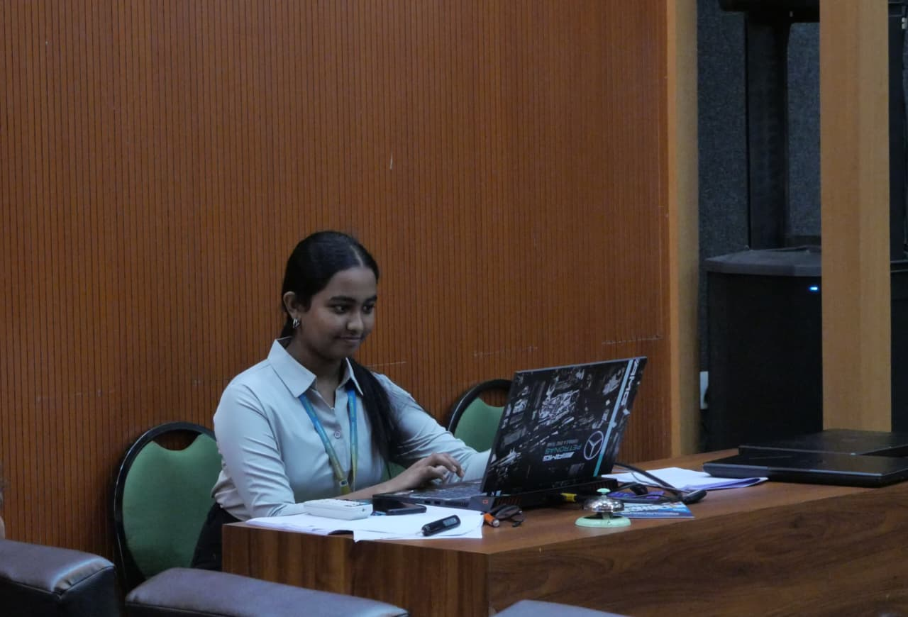
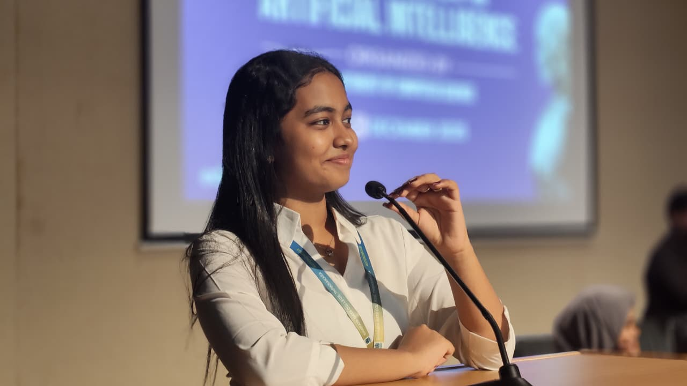
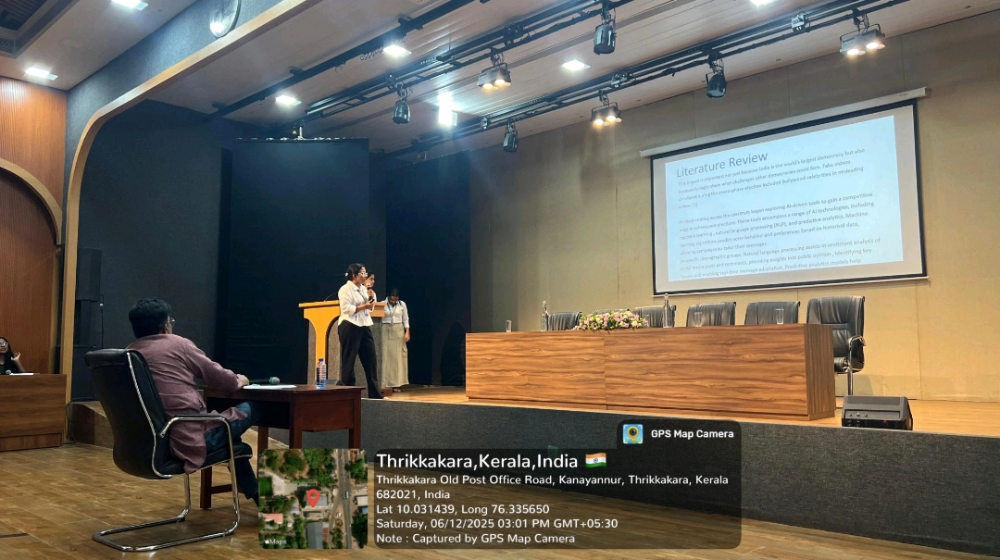
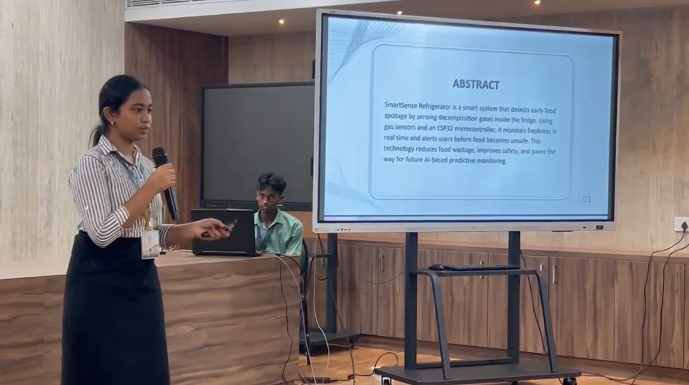
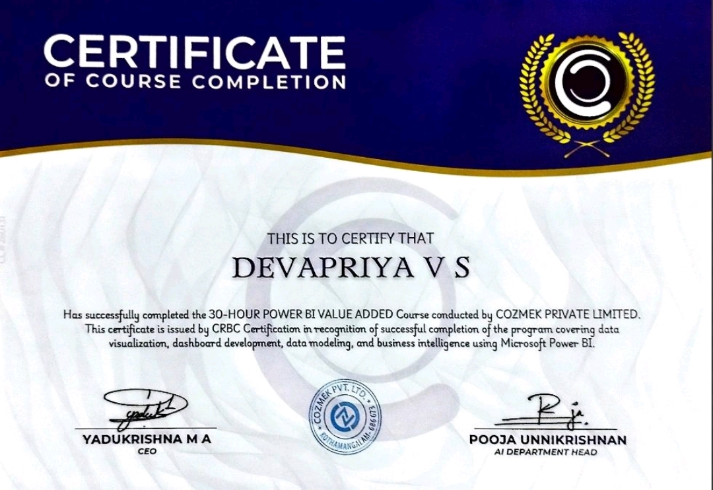
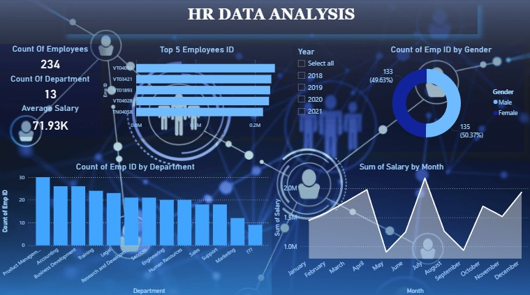
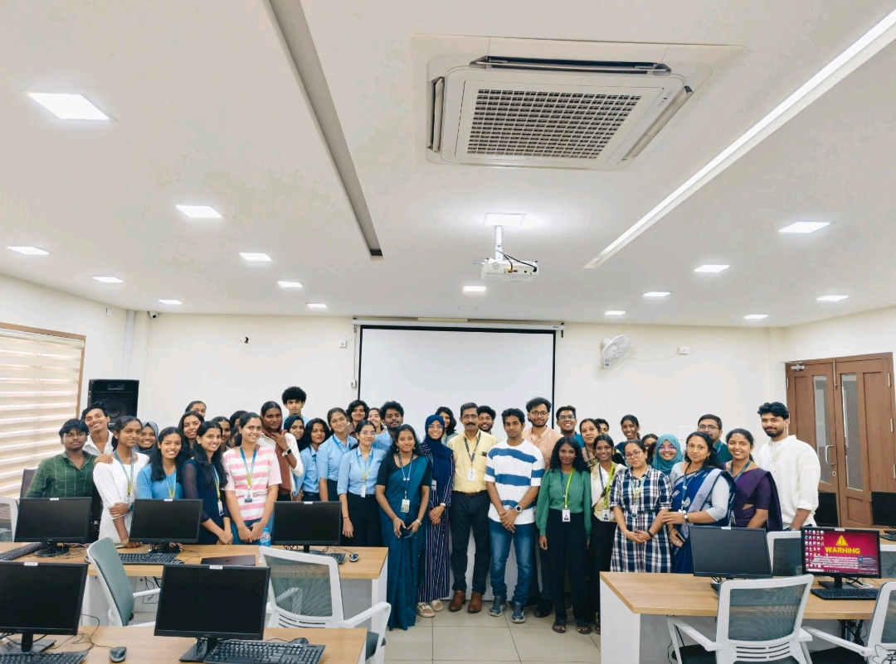
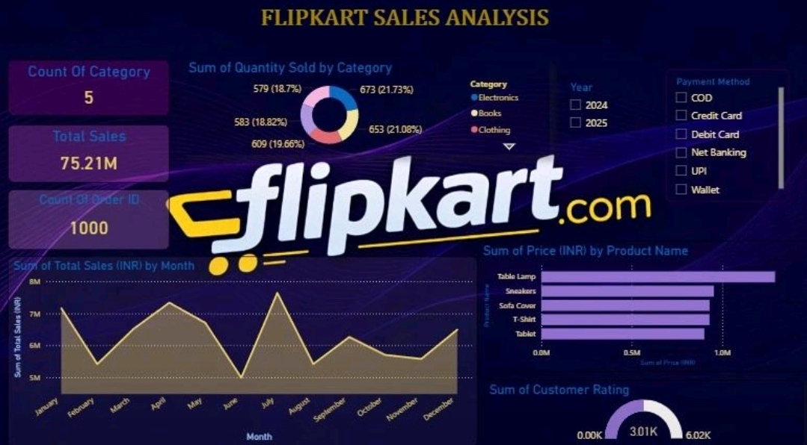

Hello, I'm
Second-year Integrated MSc Computer Science (AI & ML) student at Bharata Mata College, Trikkakara. Currently pursuing an IBM Internship in Big Data and Business Management while actively working on AI, Machine Learning, Data Analytics and Power BI projects.

Contact Me Download Resume
I am Devapriya V S, a Second-Year Integrated MSc Computer Science (Artificial Intelligence & Machine Learning) student at Bharata Mata College, Trikkakara.
I am currently pursuing a 6-week online internship in Big Data and Business Management with IBM, which started on 22 June 2026 and is currently ongoing.
My interests include Artificial Intelligence, Machine Learning, Data Analytics, Power BI, Python and Web Development. I enjoy learning new technologies and applying them through projects and research.
2025 – 2030
Currently pursuing the second year of the five-year Integrated MSc programme specializing in Artificial Intelligence and Machine Learning.
Duration: 22 June 2026 – Present
Currently participating in a six-week online internship consisting of six masterclasses focused on Big Data, Business Management and industry practices.
Developed an interactive Power BI dashboard to analyze sales, category-wise performance, monthly trends, customer ratings, payment methods and product revenue.
Created an HR Analytics dashboard in Power BI to visualize workforce insights, employee trends and organizational performance using interactive charts.
Presented at the International Conference on Recent Trends in Artificial Intelligence
5–6 December 2025

Presented at the International Conference on Artificial Intelligence and Machine Learning.
28–30 January 2026

6-week Online Internship in Big Data and Business Management (Ongoing)
Completed a 30-hour Add-on Course conducted by COZMEK at Bharata Mata College.


Completed a 3-month Certified Python Course at LBS Centre for Science and Technology, Kalamassery with A+ Grade.
National Institute of Technology Calicut
Tathva 2025
24–26 October 2025
One-day Bootcamp conducted by GDGC on Campus.
Presented my research paper "Role of AI in Indian Elections" at the International Conference conducted on 5–6 December 2025 at Bharata Mata College.
Presented the paper SMART REFRIGERATOR: Intelligent Detection of Food Spoilage Using Gas Sensors during the conference held on 28–30 January 2026.
Participated in the Data Mining workshop during Tathva 2025 at the National Institute of Technology Calicut from 24–26 October 2025.

Participated in the one-day bootcamp "Beyond the Prompt: Mastering the Art of Context Engineering", organized by Google Developer Groups on Campus (GDGC), where I learned modern AI prompting strategies and context engineering techniques for building effective AI applications.
Developed an interactive Power BI dashboard to analyse sales trends, revenue, customer ratings, categories and payment methods using visual analytics.

Designed a Power BI dashboard to visualize employee distribution, salary trends, department analysis and workforce insights.
Created a comprehensive HR dashboard to visualize employee data, performance metrics, and attendance records.
Name : Devapriya V S
Email : devaapriyavinod@gmail.com
LinkedIn: www.linkedin.com/in/devapriya-vs-86a0bb387
Phone : +91 8590369633
College : Bharata Mata College, Trikkakara